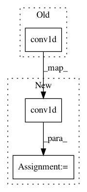

7d5bcd6ca4486e1f33d6de2533f56861d197a4bd,layers/tacotron.py,CBHG,forward,#CBHG#Any#,92
Before Change
// (B, in_dim*K, T_in)
// Concat conv1d bank outputs
x = torch.cat([conv1d(x)[:, :, :T] for conv1d in self.conv1d_banks], dim=1)
assert x.size(1) == self.in_dim * len(self.conv1d_banks)
x = self.max_pool1d(x)[:, :, :T]
After Change
// Concat conv1d bank outputs
outs = []
for conv1d in self.conv1d_banks:
out = conv1d(x)
out = out[:, :, :T]
outs.append(out)
x = torch.cat(outs, dim=1)
assert x.size(1) == self.in_features * len(self.conv1d_banks)
In pattern: SUPERPATTERN
Frequency: 3
Non-data size: 3
Instances
Project Name: mozilla/TTS
Commit Name: 7d5bcd6ca4486e1f33d6de2533f56861d197a4bd
Time: 2018-02-08
Author: egolge@mozilla.com
File Name: layers/tacotron.py
Class Name: CBHG
Method Name: forward
Project Name: f90/Wave-U-Net
Commit Name: fe50c52a31b3231a1777f14eb6131a819f082fc8
Time: 2019-01-24
Author: daniel@dstoller.net
File Name: Models/OutputLayer.py
Class Name:
Method Name: independent_outputs
Project Name: NVIDIA/OpenSeq2Seq
Commit Name: c330cc618b76a04c0f861102cfad2c73f1bc1c9a
Time: 2018-07-24
Author: vnoroozi@nvidia.com
File Name: open_seq2seq/parts/convs2s/conv_wn_layer.py
Class Name: Conv1DNetworkNormalized
Method Name: call